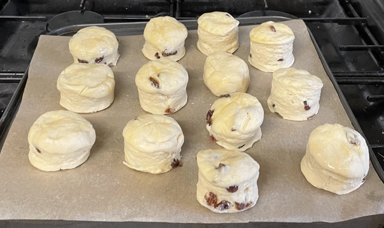
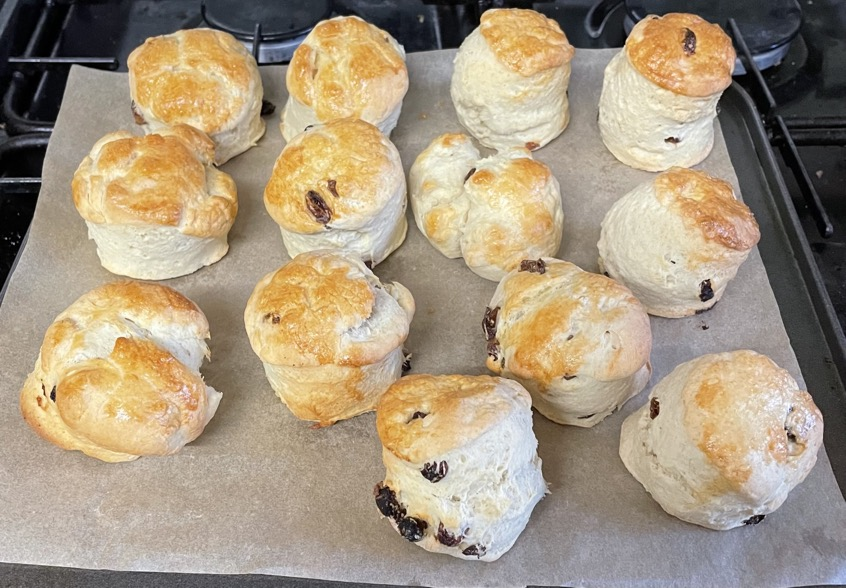
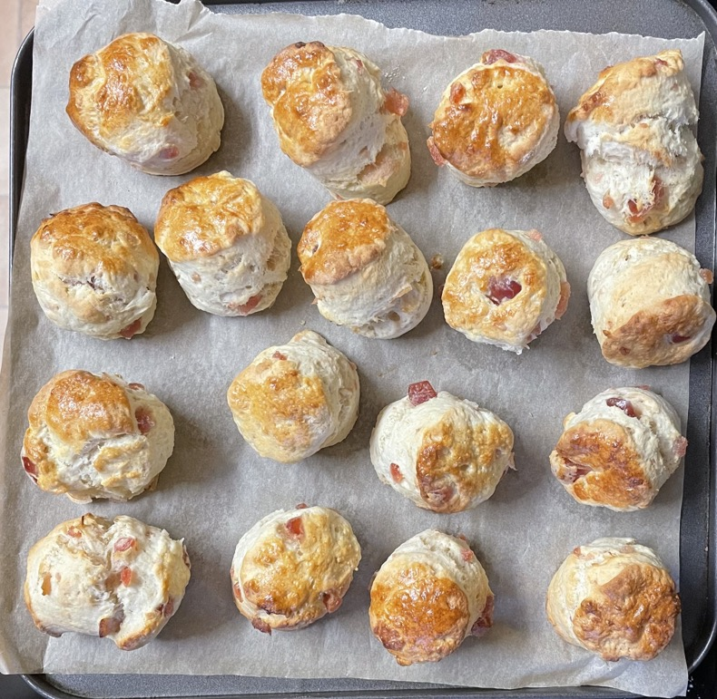
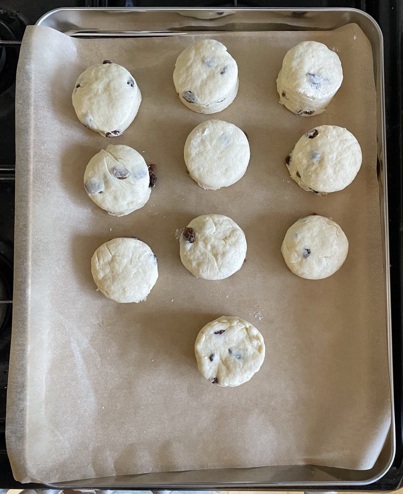
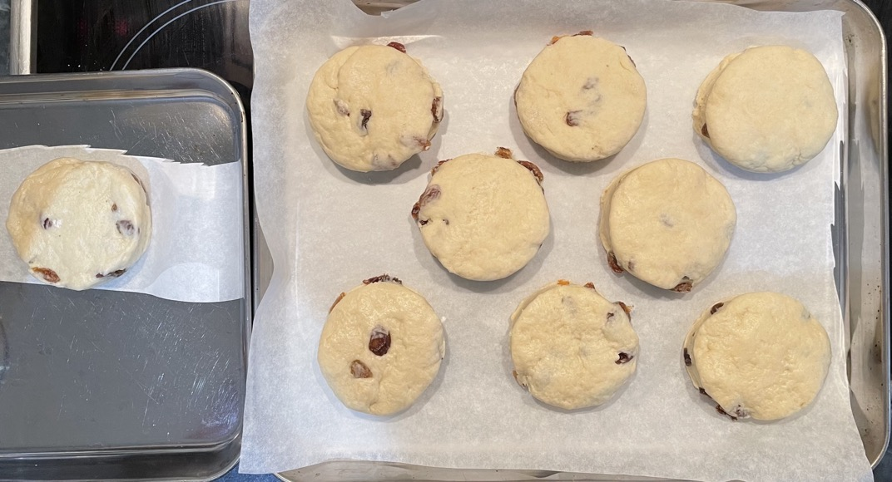

Fruit scones
Milk
- Warm in microwave
- 175ml (180g) milk
- 1 tsp vanilla extract
- squeeze lemon / lime juice
Scones
- Preheat oven to 200°C
- Mix in bowl
- 350g self-raising flour
- 1 tsp baking powder
- ½ tsp (small) salt
- Add to flour
- 85g unsalted butter chilled and cubed
- Blitz flour and butter in portions to crumbs, transferring between two bowls
- Mix in
- 1¼ tsp caster sugar
- 80g (try 90g) sultanas / raisins separated
- Mix in the milk
- Fold dough over few times on work surface
- Flatten to 4cm height
- Cut out circles with 4-7cm cutter dipped in flour
- Brush tops with egg yolk
- Cook on baking tray for 12-13 mins
- Once cool enough store scones in container so do not dry out
Serving
Notes
Pics




6.8cm (red)
